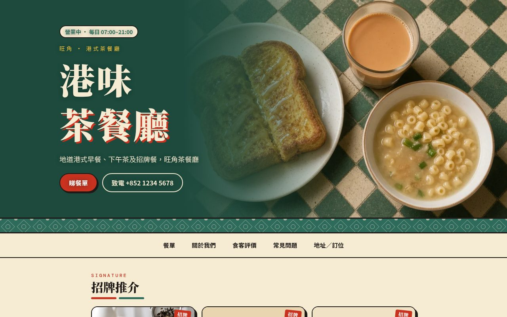
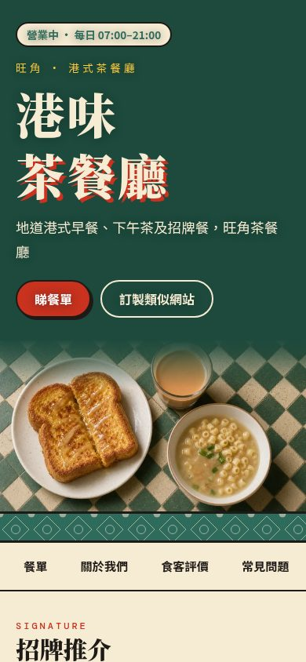
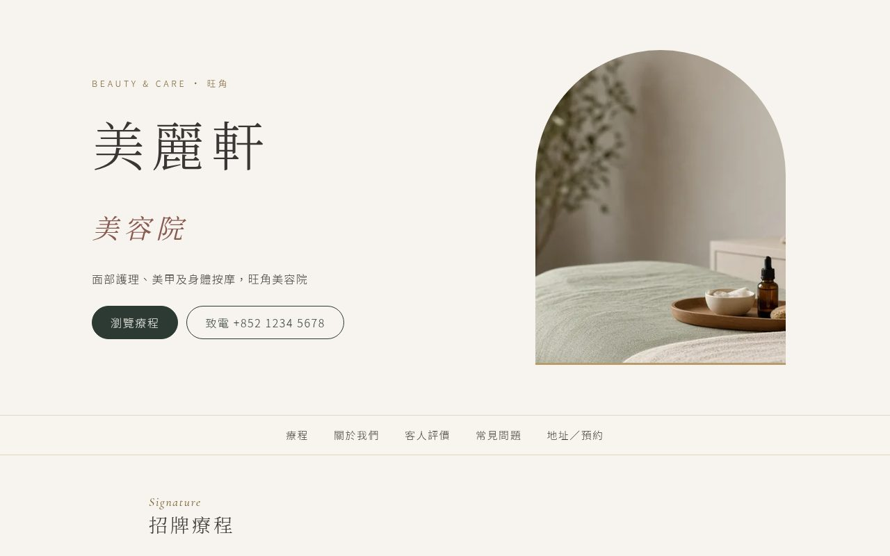
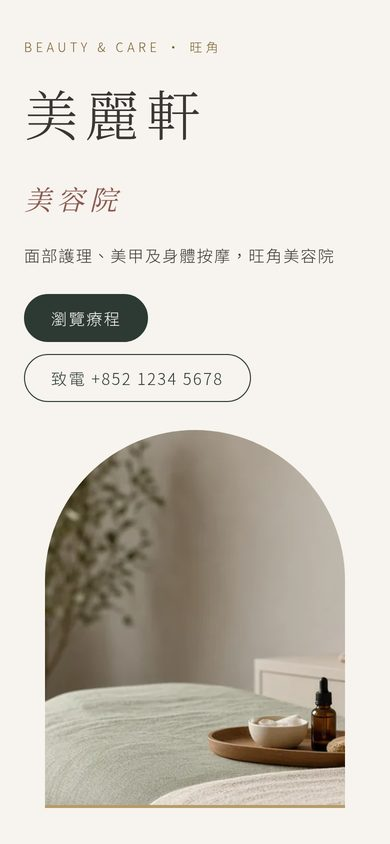
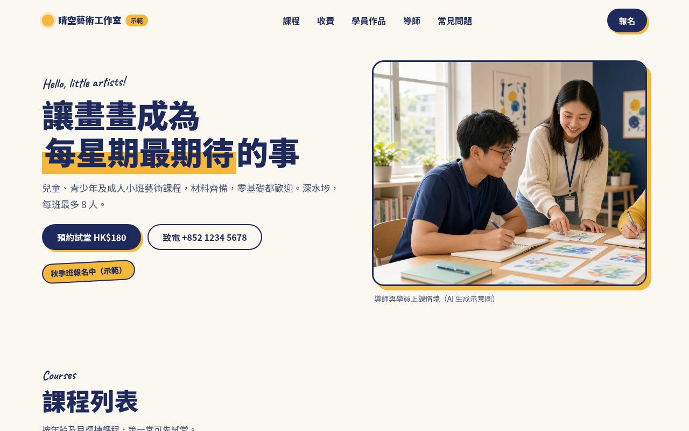
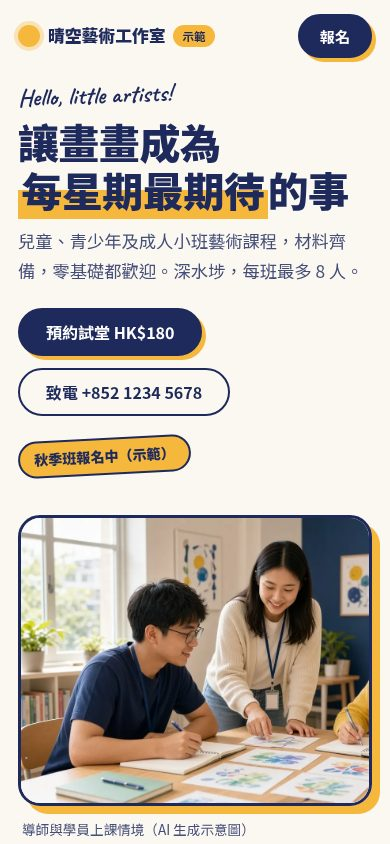
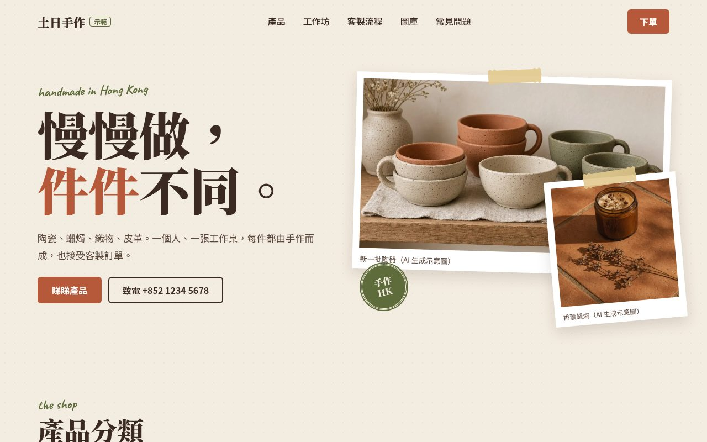
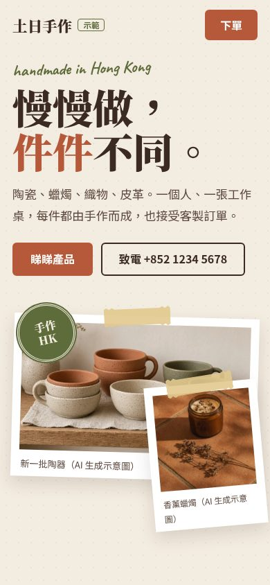

香港小商家 · 單頁網站示範
手機優先 · WhatsApp 預約 · 基本 SEO
地道港式早餐、下午茶及招牌餐，旺角茶餐廳


面部護理、美甲及身體按摩，旺角美容院


課程列表、收費表、學員作品及 WhatsApp 報名，深水埗藝術工作室


陶瓷、蠟燭、織物及皮革，附工作坊與客製訂單流程，旺角手作小店


流程
※ 四個網站嘅店名、地址、電話及評價均為虛構示範，相片為 AI 生成示意圖。